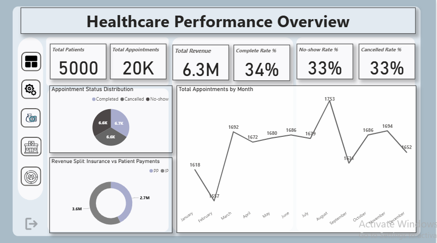
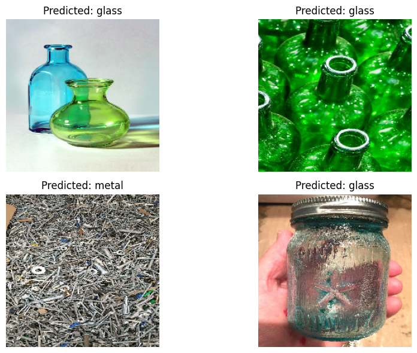
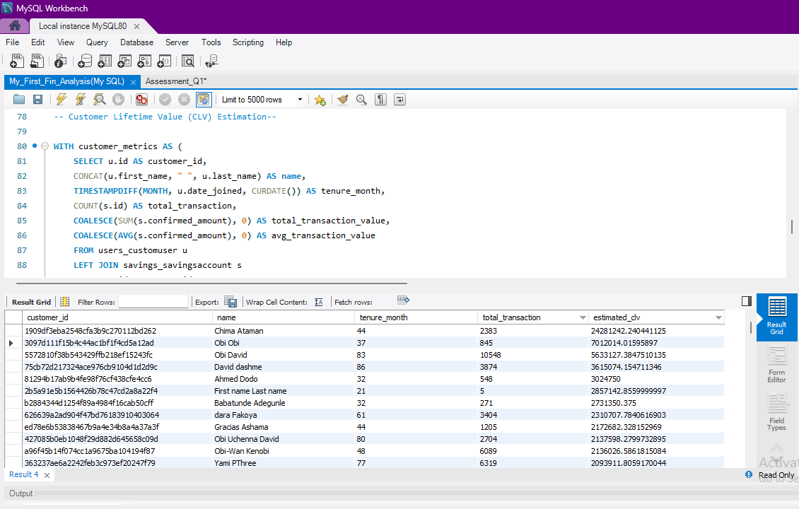
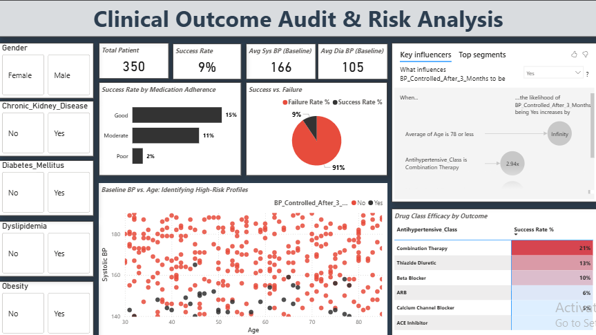

Data Scientist | Machine Learning | Health Data & Research
The day I understood that machine learning mirrors how I learn through patterns, iteration, and feedback was the day everything clicked and data stopped being abstract.
I’m a Data Scientist who uses data to solve real-world problems, not just analyze them. My work focuses on turning complex datasets into insights that drive decisions, improve systems, and uncover hidden patterns that matter.
From predicting patient no-shows in healthcare systems to building machine learning models for waste classification and sustainability, I approach every problem with curiosity, structure, and a strong bias for impact.
With a background in health and research, I bring a unique perspective to data, combining analytical thinking with real-world context. I don’t just ask what is happening, I ask why it matters and what can be done about it.
Beyond technical work, I’m actively involved in driving AI awareness and mentoring, helping others see possibilities in data just as I did.
I’m currently open to opportunities where I can apply data science to solve meaningful problems across industries, from healthcare to finance and beyond.

Addressed high patient no-show rates and low appointment completion affecting hospital efficiency. Built predictive models and patient segmentation to identify at-risk patients and support data-driven scheduling strategies, improving resource utilization and care delivery planning.
Tools: Python, Scikit-learn, SQL, Power BI

Tackled inefficient waste sorting impacting recycling and sustainability efforts. Developed a CNN-based image classification model to automatically categorize waste types, enabling scalable, reward-driven waste management systems aligned with sustainable urban development goals.
Tools: Python, TensorFlow/Keras, CNN, Image Processing

Investigated customer activity and revenue patterns to support financial decision-making. Used SQL to identify inactive accounts, analyze transaction frequency, and estimate customer lifetime value, providing insights for customer retention and revenue optimization strategies.
Tools: MySQL

Built a healthcare predictive analytics model focused on identifying patients at risk of uncontrolled hypertension within a three-month period. Applied data cleaning, feature engineering, and machine learning techniques using a Random Forest Classifier with reproducible model configuration. The final model achieved an 80% recall score, supporting early-risk detection and data-driven healthcare decision-making.
Tools: Python, Random Forest Classifier, Power BI